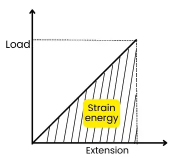

Derivation:
Consider a gradually applied tensile load \(P\) producing an extension \(\delta L\). The load-extension graph is a straight line for an elastically loaded material.

Strain Energy, \(SE\)
\[SE=\text{Area under the load-extension graph}\]
\[SE=\frac{1}{2}P\delta L\]
Stress, \(\sigma\), and Load, \(P\)
\[\sigma=\frac{P}{A}\quad\Rightarrow\quad P=\sigma A\]
Extension, \(\delta L\)
\[
\begin{aligned}
\delta L&=\frac{PL}{EA}\\
&=\frac{\sigma AL}{EA}\\
&=\frac{\sigma L}{E}
\end{aligned}\]
Substituting \(P=\sigma A\) and \(\delta L=\frac{\sigma L}{E}\),
Strain Energy in terms of Stress
\[
\begin{aligned}
SE&=\frac{1}{2}(\sigma A)\left(\frac{\sigma L}{E}\right)\\
&=\frac{\sigma^2AL}{2E}
\end{aligned}\]
Since \(AL\) is the volume \(V\),
Strain Energy in terms of Stress, Modulus and Volume
\[\boxed{SE=\frac{\sigma^2V}{2E}}\]
Therefore, strain energy stored in a tensile member is:
Final Expression for Strain Energy
\[\boxed{SE=\frac{P^2L}{2AE}=\frac{\sigma^2}{2E}V}\]
Final expression: \(\boxed{SE=\dfrac{\sigma^2V}{2E}}\)